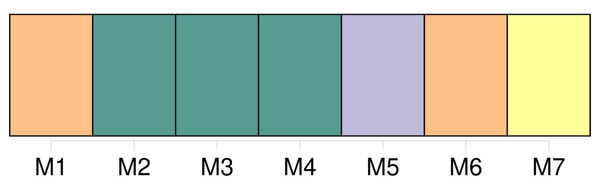
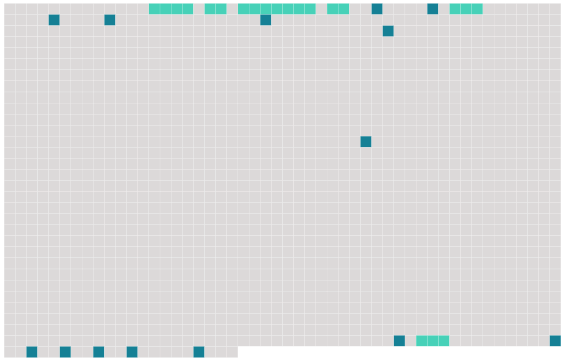

Longueur nb maillons : 20 mentions |
  |
Voici comment : Tout le monde [l'] appelait [le père Maréchaud] Bien que porte à porte, nous nous défendions de [le] saluer, ce dont [il] enrageait si fort, qu'un jour, n'y tenant plus, [il] nous aborda sur la route et nous dit : « Eh bien!! [4 phrases]
En revenant de l'école, et en y allant, mes frères tiraient [sa] sonnette, avec d'autant plus d'audace que le chien, qui pouvait avoir mon âge, n'était pas à craindre. [20 phrases] C'était l'épouse d'un conseiller municipal, adversaire de [Maréchaud] , et qui, depuis quelques minutes, s'apitoyait bruyamment sur la folle. [49 phrases]
[C'] était [le père Maréchaud] en bonnet de coton, contemplant les dégâts, [sa] marquise, [ses] tuiles, [ses] pelouses, [ses] massifs, [ses] marches couvertes de sang, [son] prestige détruit. |
 |
La ressource peut être téléchargée sur la page Ortolang
Si vous avez des questions ou vous voyez des erreurs, merci d'envoyer un mail à silvia.federzoni89@gmail.com
Site développé par S. Federzoni (contact)